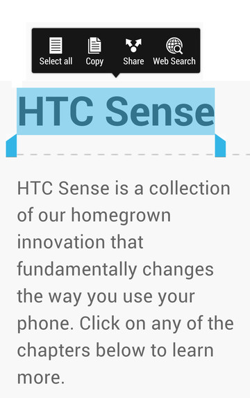

Selecting, copying, and pasting text
In apps such as the web browser and Mail, you can select and copy text, and then paste or share it.
- Press and hold on a word.
-
Drag the start and end anchors to highlight the surrounding text you want to select.
Tip: You can use the magnifier to zoom in while selecting your text. To turn on the magnifier, slide the Notifications panel open, tap
 > Accessibility, and then select the
Show magnifier option. You'll see the magnifier when you tap one of the text selection anchors.
> Accessibility, and then select the
Show magnifier option. You'll see the magnifier when you tap one of the text selection anchors.
-
After you have selected the text you want to copy, tap
Copy.
The selected text is then copied to the clipboard.
- In a text entry field (for example while composing an email), press and hold at the point where you want to paste the text.
- Tap Paste.
Tip: To copy the address of a linked webpage, press and hold the link, and then tap
Copy link URL.